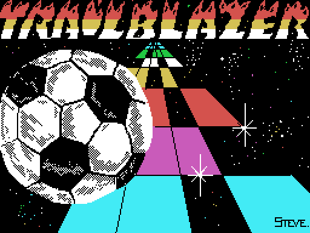
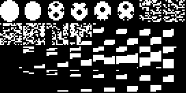

La pantalla de carga, dibujada desde los bytes de la cinta. Abajo a la derecha, en letra pequeña, la única firma de todo el juego: STEVE.
Una bola que baja por una pista en perspectiva sembrada de agujeros, de tramos que aceleran, de tramos que frenan y de casillas que la hacen rebotar. Hay catorce pistas y un reloj, y ese es todo el juego.
Las teclas las dice el propio juego, en el rótulo que desfila por el título: Q izquierda, W derecha, P acelerar, L frenar y espacio para saltar. También vale un mando Kempston, y en el menú de opciones se elige entre los dos.
Hay dos partidas:
Lo dicen las dos rutinas gemelas de 0x9284 y 0x92A7: la primera descuenta el reloj digito a digito y la segunda lo suma.
Las filas distintas que hay en la tabla, las 176 primeras.
El motor entiende ocho tipos de casilla, y no más. Lo dice el despachador de 0x8E65, que compara la casilla contra estos valores y contra ningún otro:
| valor | qué es | qué hace |
|---|---|---|
| 0 | agujero | la bola se cae |
| 1 y 5 | pista | nada; son los dos colores del damero |
| 2 | acelera | pone la velocidad en 6 |
| 6 | frena | la pone en 2 |
| 7 | rebota | arranca una de las siete curvas de salto |
| 3 y 4 | mandos al revés | izquierda y derecha se cambian |
Los dos últimos son los más sucios: 0x8E21 le da la vuelta a los dos bits del mando rotándolos uno sobre el otro, y a partir de ahí la izquierda es la derecha.
La bola no se cae por estar encima de un agujero: se cae si los dos lados están al aire. 0x8E94 lee el color de tres casillas de la VRAM —no del mapa, de lo que hay pintado— y mira si hay suelo a la izquierda y a la derecha. Con los dos, no pasa nada; con uno solo, la bola se desliza siete píxeles hacia el lado que sí tiene suelo; con ninguno, se cae.

Los patrones de sprite: la bola, en las tallas que necesita la perspectiva.
Hay siete curvas de salto, de 52, 40, 30, 23, 21, 18 y 13 valores. Cada una es la fila del sprite cuadro a cuadro: baja hasta un mínimo y vuelve a subir de forma simétrica, y cierra con 0xFF.
La tabla de 0x87E8 tiene ocho entradas y repite la más larga en sus tres últimas, así que de los ocho rebotes posibles solo salen seis curvas. Y hay una séptima, la de 0x8722, a la que esa tabla no apunta: se llega a ella por otro camino, el del salto con el espacio.
Tres voces, y cada una con su intérprete. La de fondo la lleva 0x8294, que saca dos voces a la vez usando los dos juegos de registros del Z80; los efectos van por 0x81B9 y 0x8258, uno por canal.
Las notas se guardan como índices en la tabla de periodos de 0x812D, que es una escala cromática de verdad: doce entradas más allá el periodo se parte por la mitad, que es lo que define una octava. Los tests lo comprueban.
Y el volumen no se guarda en ninguna variable: se escribe dentro de la instrucción que lo pone (0x81CF escribiendo en 0x81C6).
Están dibujadas una a una en Las 14 pistas.